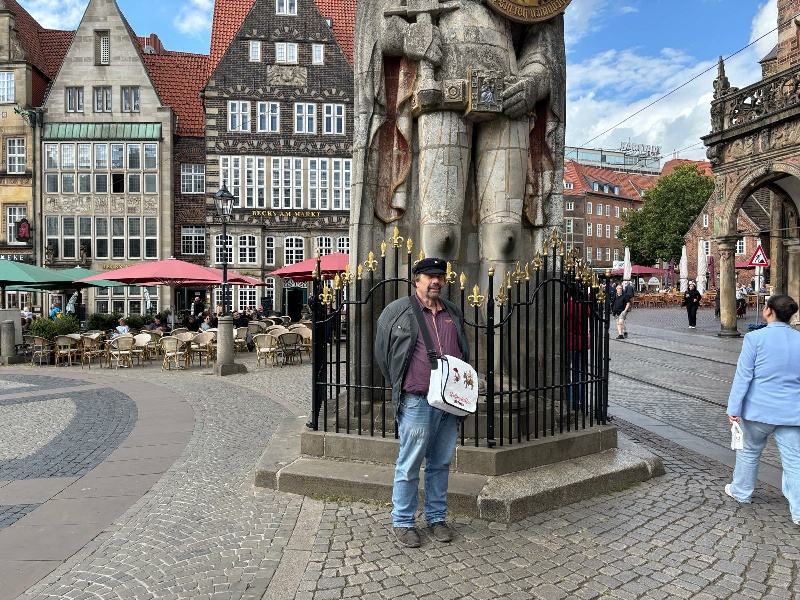

01 / DER KLASSISCHE RUNDGANGBremens Altstadt
Bremens Altstadt
entdecken
Vom Marktplatz durch die Böttcherstraße bis in den wundervollen Schnoor. Eine kleine Reise durch Zeit und Ort – und ein persönlicher Blick auf das, was Bremen ausmacht.
Diese Führung anfragen